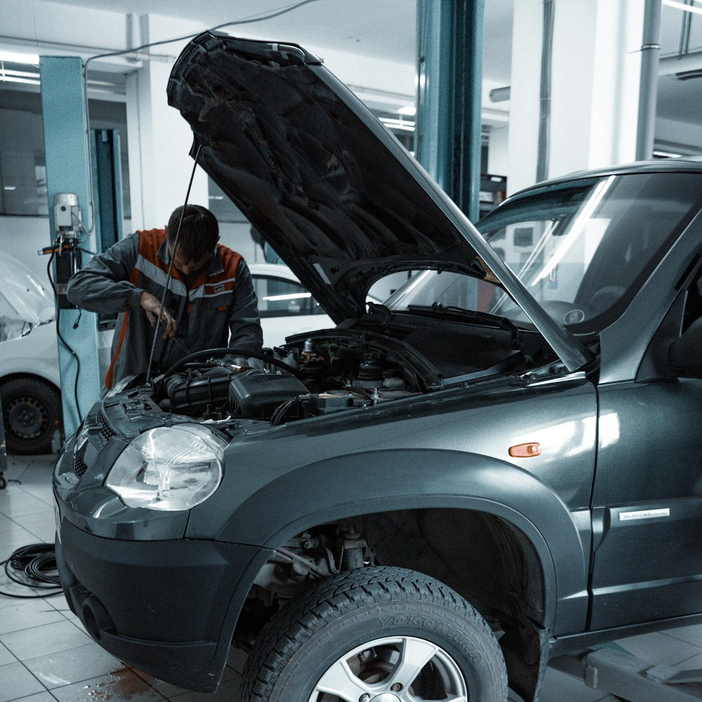

Solutions for Different Vehicles
From private cars and motorcycles to tricycles and trucks, our services cover different vehicle categories.
Why choose us
Choosing the right vehicle tracking solution is an important step towards better vehicle security and awareness. SAM DE TRACKER provides tracking and installation services for different types of vehicles, helping vehicle owners take a smarter approach to protecting what matters.
What makes us different
At SAM DE TRACKER, we focus on providing vehicle tracking solutions that address different vehicle needs.
From private cars and motorcycles to tricycles and trucks, our services cover different vehicle categories.
We provide GPS tracker installation as part of our vehicle tracking services.
Our services also include stolen vehicle recovery assistance. Contact us to understand how this service works.
We help vehicle owners explore tracking solutions that support better awareness of their vehicles.

The benefits of vehicle tracking
Vehicle tracking can provide useful information and additional support for people who want to take vehicle security more seriously.
Our commitment to customers
Every vehicle owner deserves to understand the tracking solution they choose. Our goal is to help customers make informed enquiries, understand the services available, and take the next step towards better vehicle security.
Take the next step
Take the next step towards better vehicle security. Speak with SAM DE TRACKER about a suitable tracking solution for your vehicle.
Call +234 708 517 0538